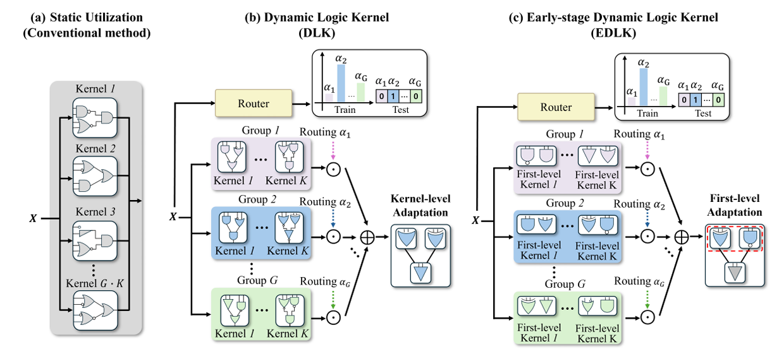

01
Efficient AI
Inference-efficient models, data-efficient learning, hardware-aware models, and logic-based neural networks.

Ph.D. Student · Korea University
Department of Electrical Engineering
Korea University, Seoul, Korea
I am a Ph.D. student in Electrical Engineering at Korea University, advised by Prof. Seung-Won Jung. My research focuses on efficient AI and low-level vision, with an emphasis on inference-efficient and hardware-aware models, including logic-based neural networks, image restoration, and camera ISP.
Inference-efficient models, data-efficient learning, hardware-aware models, and logic-based neural networks.
Image restoration and camera ISP, with an emphasis on computationally efficient image processing.
Can logic gate networks scale effectively with width?
Function-aware tree edit distance reveals increasing kernel redundancy under width scaling, especially at the first gate level.
Use DLK for input-dependent kernel routing and EDLK to focus dynamic routing on first-level gate groups.
Turns additional width into effective capacity, improving accuracy and parameter efficiency.
Conference on Neural Information Processing Systems (NeurIPS 2026)

Can LUTs alone enable arbitrary-scale super-resolution?
Learn interpolation mixing weights and convert them into LUTs for efficient arbitrary-scale super-resolution.
Enables continuous-scale super-resolution while retaining efficient LUT-based inference.
IEEE/CVF International Conference on Computer Vision (ICCV 2025)

Can weakly supervised localization learn new classes without forgetting previously learned localization knowledge?
Compensate feature drift caused by class-incremental learning to preserve localization capability across sequential tasks.
Maintains localization knowledge while progressively learning new object classes.
ACM International Conference on Multimedia (ACM MM 2023)
* Equal contribution